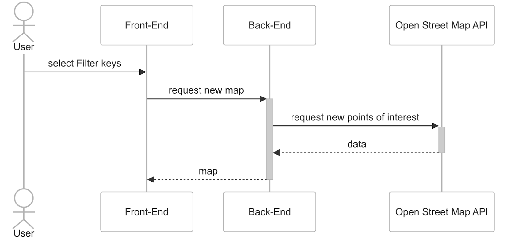

Use-Case-Realization Specification: Filter Map
Version 1.0
Revision History
| Date | Version | Description | Author |
|---|---|---|---|
| 27.10.2024 | 1.0 | UCRS for the Filter Map use case | Green Sprout Team |
1. Introduction
1.1 Purpose
The purpose of this Use-Case Realization Specification is to detail the design of the “Filter Map” use case, where a user selects filter criteria on an interactive map, which then displays points of interest that correspond to the filtered properties.
1.2 Scope
This document covers the interaction flow between the User, Front-End, Back-End, and OpenStreetMap API for filtering and displaying points of interest based on user-selected criteria.
1.3 Definitions, Acronyms, and Abbreviations
- POI: Point of Interest
- API: Application Programming Interface
- n/a: not applicable
- UCRS : Use-Case-Realization Specification
1.4 References
n/a
1.5 Overview
This document is organized into sections detailing the purpose, scope, and flow of events in this use case, followed by derived requirements for implementation.
2. Flow of Events—Design
The following describes the flow of events in the "Filter Map" use case. The sequence diagram is shown below for visual reference:

Flow Steps:
- User Action: The user selects filter keys on the front-end interface to define specific types of points of interest to display on the map.
- Front-End Request: The front-end sends a "request new map" message to the back end, including the user-selected filter keys.
- Back-End to OpenStreetMap API: The back end processes the request and sends a "request new points of interest" message to the OpenStreetMap API. This request includes the filter parameters specified by the user.
- API Response: The OpenStreetMap API returns data containing the filtered points of interest matching the criteria.
- Back-End to Front-End: The back end forwards the received data to the front-end as a "map" response.
- Map Display: The front-end processes and displays the updated map with the filtered points of interest for the user.
3. Derived Requirements
- Real-Time Data: The system should update the map in real-time based on the user's selected filters.
- Error Handling: If the OpenStreetMap API fails to respond or encounters an error, the system should notify the user and allow them to retry.
- Scalability: The back end must efficiently handle multiple requests to the OpenStreetMap API without performance degradation.
- Data Accuracy: The displayed points of interest must accurately reflect the filter criteria selected by the user.